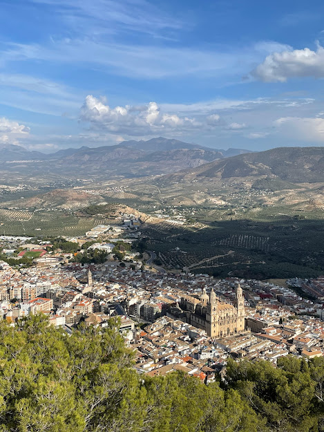
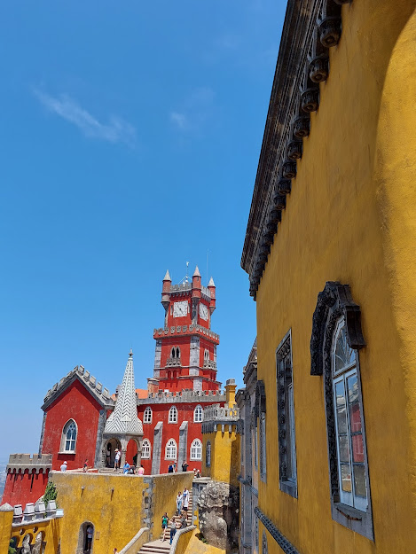
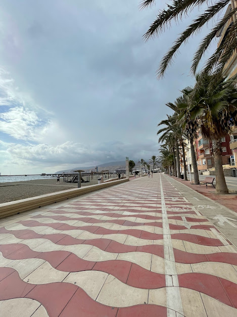
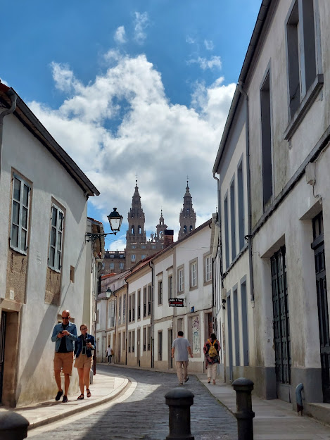
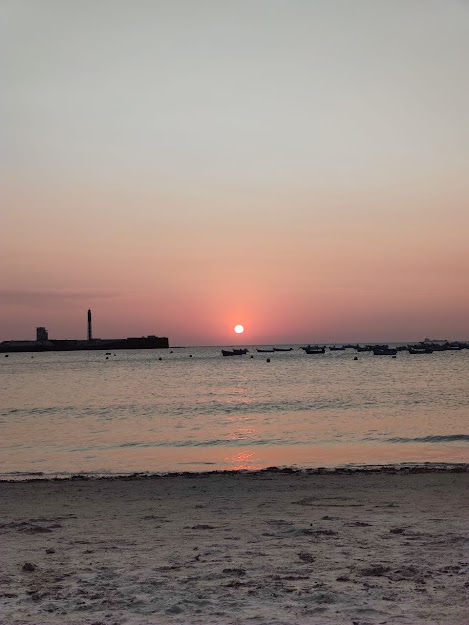
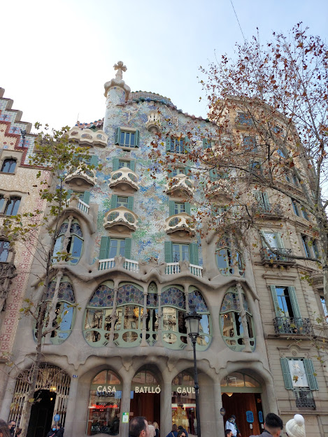

Welcome To Camello Loco
La Península Iberica es ocupada por España y Portugal con limite en Los Pirineos(Cordillera que separa España de Francia).
Estos son los destinos que te van a enamorar de Iberia:
Jaén
La provincia de los olivos, se siente el aroma en todas partes, con una arquitectura divina, podes subir al castillo de Santa Catalina y tener una vista panorámica única de la ciudad como también de los campos de olivos, experiencias únicas.
Sintra
Sintra es lo mas cercano a un cuento pero en la vida real, animate a descubrir sus palacios de colores sus vistas imperdibles y su gran historia.
Almería
Esta ciudad de costa tiene unas playas hermosas acompañado de una gastronomía muy buena y a la vez económica, perdete en bares de tapas con unas cañas o en las playas mas californianas de toda España.
Santiago de Compostela
Una ciudad que te llega al corazón, siendo punto de llegada de peregrinos hace siglos esta ciudad puede tocar tu corazón y hacerte sentir su historia, respirá amor, tradición y hogar, aparte de ser un paraíso del buen comer.
Cádiz
Una ciudad fundada en el S.XII con mucha historia en sus calles y mucha alegría en su gente, como si fuera poco además tienen unas playas de locura.
Barcelona
Playa, fiesta y cultura en una sola ciudad, uno de los destinos favoritos de muchos turistas a lo largo de las últimas décadas, una ciudad con mucho para ver y disfrutar.